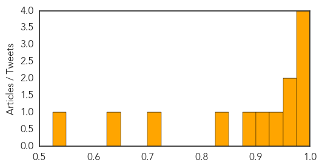

Influenza
30-Day Web Trend
0 alerts, 0 warnings

30-Day Twitter Trend
0 alerts, 0 warnings
Article Locations
Article Confidences
Top Articles:
- 0.995
- Viruses should be addressed with knowledge, not fear — Opinion — Bangor Daily News — BDN Maine
- 0.994
- Boston Sees Rise In Flu Cases « CBS Boston
- 0.988
- KATU.com - Portland News, Sports, Traffic Weather and Breaking News - Portland, Oregon
- 0.986
- 2nd UO student diagnosed with potentially deadly infectious disease
- 0.973
- Missoula County sees higher number of influeza cases
- 0.957
- Possible human bird flu cases linked to Hants outbreak
- 0.929
- Poultry Products Safe for Consumption if Cooked Thoroughly – Health Minister
- 0.902
- LPAI confirmed on UK poultry farm
- 0.891
- Just Half of Nursing Home Staff Getting Flu Vaccine
- 0.834
- Public urged not to panic over H3N2 outbreak in Hong Kong
- 0.709
- 'Should I send my child to school?': Hong Kong parents seek advice as flu death toll hits 111
- 0.633
- Vietnam holds One Health Conference on infectious diseases
- 0.525
- Local Pharmacists welcome move to administer flu vaccines
Top Tweets:
-
No tweets found for Feb 03, 2015
Mumps
30-Day Web Trend
0 alerts, 0 warnings
30-Day Twitter Trend
0 alerts, 0 warnings

Article Locations

Article Confidences

Top Articles:
-
No articles found for Feb 03, 2015
Top Tweets:
-
No tweets found for Feb 03, 2015